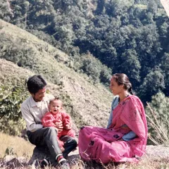
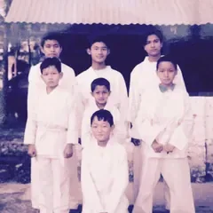
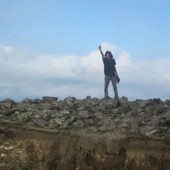
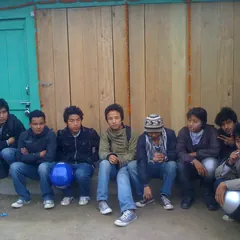
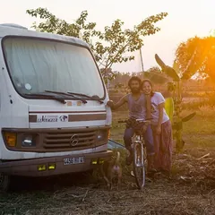
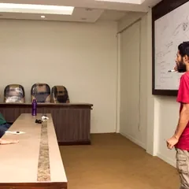
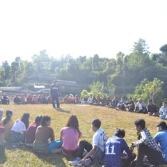
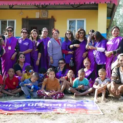
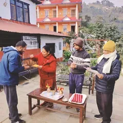
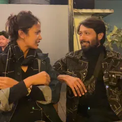

The long way round
I learned life the inconvenient way. A few of the turns that shaped the work.

Born in Bhojpur
Born into a Pradhan Newar and Parajuli Brahmin family in the hills, then carried down to Damak as a child, between old village rhythms and a fast changing town.

Twelve years away from home
From a young age I lived in a hostel, a small and isolated world. It taught me to watch closely, wait patiently, and stand on my own. The fuller story is in my personal journey book.

I left the path
Around the end of school I chose to step off the planned road and go looking for my own life, my own teachers, and my own answers.

The dark, and the climb out
There were lost years too, addiction, confusion, and the slow work of healing. I do not hide them. They are where much of my understanding was born.

Travelling to learn
I moved across Nepal, India, and Cambodia, hitchhiking, living on farms and in ashrams, learning yoga, Ayurveda, and how other communities truly live.

The Joon Project begins
I gathered friends and shared a simple idea, a movement to research and redesign how we live with each other, with nature, and with technology.

Maya Universe Academy
I arrived as a volunteer and became Principal, weaving yoga, meditation, and the arts into daily school life in Udayapur.

Hamro Orphanage
As managing advisor I helped turn an institutional orphanage into a warmer, family style, regenerative home.

Permaculture at HASERA
I completed the International Permaculture Design Course at Patlekhet, deepening the regenerative thread that runs through all my work.

Mery & Khem
I co founded a life design studio with Merina in Damak, bringing brand, digital, and life to one table.